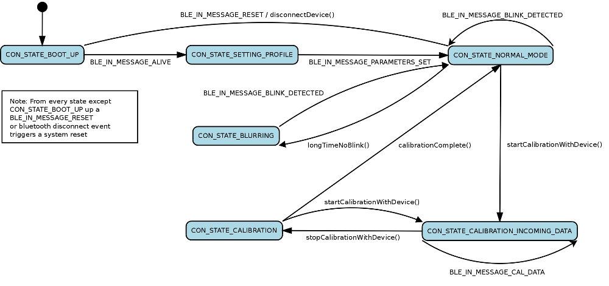
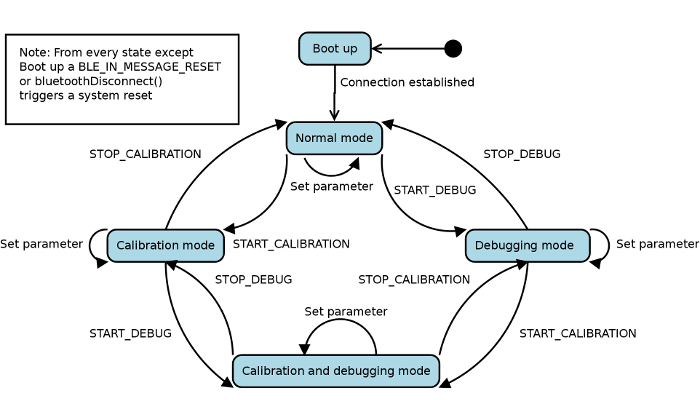

Source code documentation
This documentation describes the source code and some key functionalities of the eyeDrops Cocoa Application. All classes and files are commented very detailed and important modules are described in the following.
Program structure
- AppDelegate: Main frame of the app that manages the status-icon, the menu and coordinates all the interaction between the other program parts.
- BLEDeviceManager: Bluetooth connection and communication manager (singleton).
- UserProfileManager: The class that manages all the current user profiles (singleton).
- BlurredWindow: Key class in order to get a blurry screen.
- PreferencesWindowController: The preferences window where the user can change the blurring and bluetooth settings and is also able to create, change or delete user profiles. Calibration procedures are started from within this window.
- CalibrationWindowController: The calibration window where the user can perform a calibration. The animation (AnimationViewController, AnimationView) is used to signalise when the user should blink. The calibration results are then presented in the two given plots (SensorDataViewController, BlinkPredictionViewController).
- Settings: The settings class (singleton) manages all the user settings. Any changes that will be made during runtime are automatically done on the instance’s variables. when closing the application, all settings will be saved to a file and reloaded at the next start up.
Bluetooth communication protocol
The following figure 1 shows the connection states the BLE device manager will be in after certain events / actions. This is important in order to understand how the communication protocol between the RFDuino (wearable device) and the Mac works.

Figure 1: Connection state diagram on Mac side
Figure 2 shows the connection states the wearable (RFDuino) will be in after certain events / actions.

Figure 2: Connection state diagram on RFDuino side
A compact overview over all the defined and used messages is given in the Protocol.h. This file is written from the Mac’s point of view, that is BLE_OUT_MESSAGE are the messages that the Mac sends to the wearable and BLE_IN_MESSAGE are the ones that the Mac will receive. On the wearable side the nomenclature is swapped, BLE_IN_MESSAGE are the ones that are defined as BLE_OUT_MESSAGE on the Mac and vice versa.

 1.8.13
1.8.13